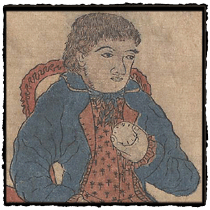

|
 Foreigners and Disease
by Laura W. Allen
Foreign traders were often blamed for introducing new diseases to Japan. A number of prints depicting foreigners, their ships, and the foreign communities in the port cities of Nagasaki, and later, Yokohama, are included in the collection. Anxiety about the malign influence of foreigners was among the factors leading the seventeenth-century Tokugawa shoguns to isolate Japan through policies sharply restricting contact with the outside world. Cholera does seem to have arrived in Japan via ships landing in Nagasaki, so these fears were not altogether unfounded. Although Ieyasu (1543-1616), the first Tokugawa shogun, encouraged foreign trade, during the 1630s and 1640s the third, Iemitsu (1604-51) effectively closed the country's borders through a series of exclusion decrees. From that point until the mid-nineteenth century, most Japanese subjects were prohibited from leaving the country, and the only foreign traders allowed to conduct business in Japan were a small number of Dutch and Chinese men who were confined to the island settlement of Dejima, located in Nagasaki Bay. Nagasaki, a port on the southern island of Kyushu, was located at a safe remove from the Edo capital.
The maps suggest the ease with which foreigners could be contained within this deep harbor: after navigating a narrow passage to enter, the ships and their sailors found themselves facing a substantial town, whose Japanese population outnumbered the residents of Dejima by at least ten to one. Each of the maps in the collection also carefully details the appearance of the foreign ships in the harbor.
|
{% include sidenav.html %} | ||